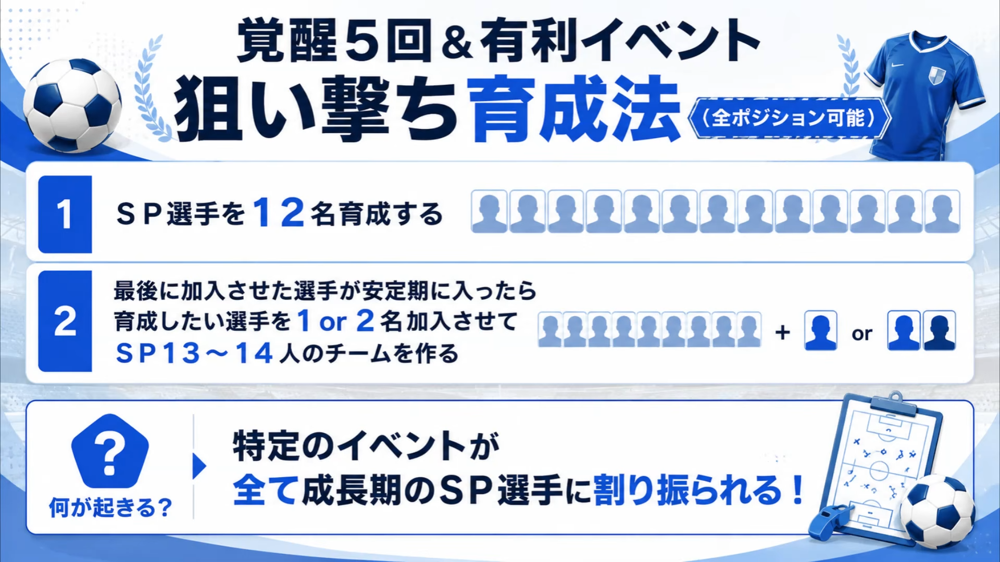
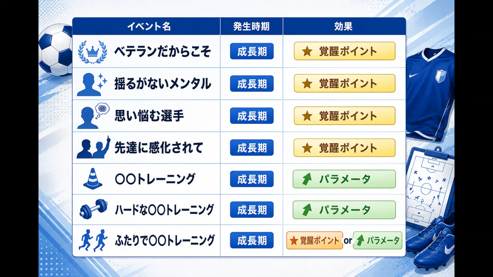
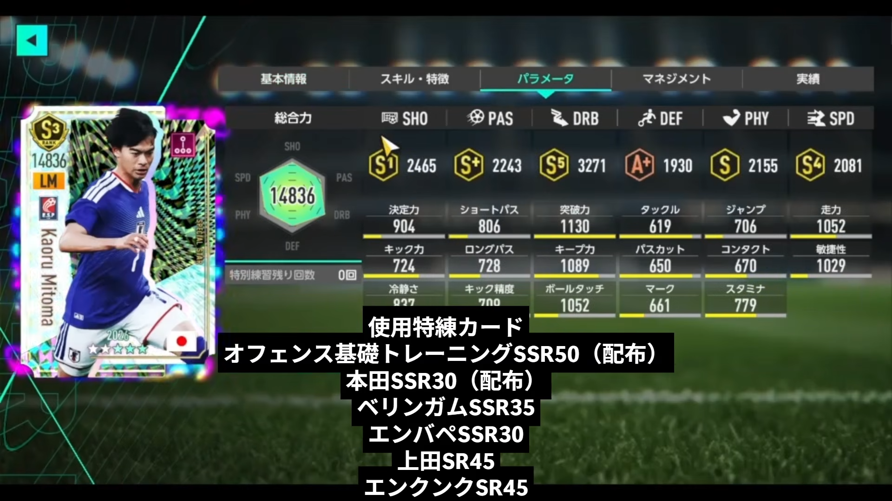
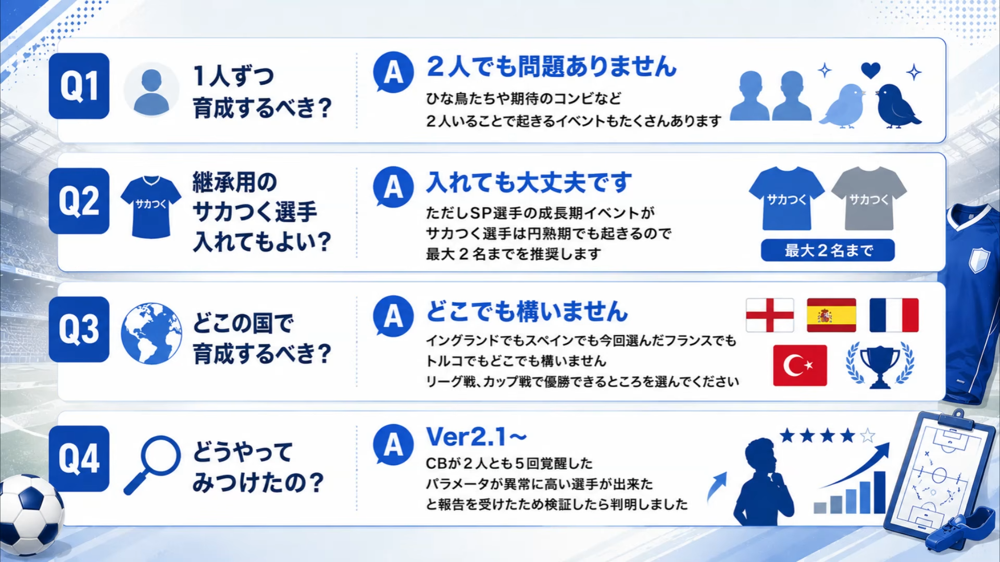

【サカつく2026】覚醒5回を狙う育成法｜有利イベントを成長期SP選手に集中させる方法【Ver2.1対応】
育成したいSP選手に有利なイベントを集中的に発生させ、覚醒5回と高いパラメータを狙う育成方法を紹介します。ポイントは、先に12名のSP選手を育成し、最後に育成対象を加えてSP選手だけの13～14名編成を作ることです。
本記事の方法はVer2.1時点の検証結果をもとにしています。動画内では約50シーズンの試行で対象イベントが育成選手へ集中したとされていますが、イベント発生にはランダム要素があるため、毎回同じ結果を保証するものではありません。
今回の記事はこちらの動画をベースに作成しました。
動画作成「ユウサクさん」： @yousaku1234
 クリックしてYouTubeで動画を見る
クリックしてYouTubeで動画を見る
覚醒5回を狙う育成法の仕組み

通常の育成では、覚醒ポイントやパラメータが上昇するイベントが複数の選手へ分散します。そこで、育成対象以外のSP選手を安定期まで進め、チーム内の成長期SP選手を1～2名に限定します。
この状態を作ることで、成長期に発生する特定イベントの対象が育成したい選手へ集中しやすくなり、覚醒ポイントとパラメータを効率よく積み上げられる、という仕組みです。
具体的な育成手順
SP選手を12名加入させて育成する
最初に育成対象ではないSP選手を12名加入させます。ブーストパスを利用している場合は1年に3名ずつ、未利用なら2名ずつなど、加入可能人数に合わせて進めます。
12名が安定期に入るまで進める
最後に加入させたSP選手が安定期に入るまで育成を進めます。ここで既存12名が成長期を抜けた状態を作ることが重要です。
育成したいSP選手を1名または2名加入させる
覚醒5回を狙いたい選手を最後に加えます。1名の方がイベントを集中させやすい一方、2名でも覚醒5回の成功例が確認されています。
SP選手13～14名のチームで育成する
安定期のSP選手12名と、成長期の育成対象1～2名でチームを構成します。リーグ戦とカップ戦で優勝できる環境を選び、覚醒ポイントを確保しながら育成を進めます。
狙えるイベントと効果
動画内の検証では、以下の成長期イベントが育成対象へ繰り返し発生しました。覚醒ポイント系イベントだけでなく、トレーニング系イベントによるパラメータ上昇も重なるため、最終能力を大きく伸ばせます。

| イベント | 主な効果 | ポイント |
|---|---|---|
| ベテランだからこそ | 覚醒ポイント | 成長期の育成対象へ集中させたい主要イベント |
| 揺るがないメンタル | 覚醒ポイント | 覚醒回数を増やすうえで重要 |
| 思い悩む選手 | 覚醒ポイント | 成長期の選手を対象とするイベント |
| 先達に感化されて | 覚醒ポイント | 発生例が少なく、動画内でも成長期イベントと推定 |
| ○○トレーニング | パラメータ上昇 | 各種能力を継続的に強化 |
| ハードな○○トレーニング | パラメータ上昇 | 通常より大きな上昇が期待できる |
| ふたりで○○トレーニング | 覚醒ポイントまたはパラメータ | 育成対象を2名にする利点の一つ |
検証結果：5年間で覚醒5回を達成

動画の実践例では、育成開始後にイベントが対象選手へ集中し、5年間で覚醒5回を達成しています。最終総合力は14,836で、展開次第では15,000も狙える可能性があるとされています。
覚醒ポイントだけでなく、トレーニングイベントによるパラメータ上昇も継続して受けられるため、単に覚醒回数を増やすだけではなく、選手の最終能力そのものを高めやすい点が特徴です。
成功率を高めるポイントと注意点
育成対象は1～2名に絞る
イベントの対象候補が少ないほど集中しやすくなります。確実性を優先するなら1名、コンビイベントも狙いたい場合は2名がおすすめです。
継承用のサカつく選手は最大2名まで
継承用選手を加えても育成は可能ですが、SP選手向けの成長期イベントがサカつく選手には円熟期でも発生するため、イベントが分散する可能性があります。動画では最大2名までが推奨されています。
育成国は「優勝できるリーグ」を優先
イングランド、スペイン、フランス、トルコなど、育成する国自体は問いません。重要なのはリーグ戦とカップ戦で優勝し、覚醒ポイントを安定して獲得できることです。
高レベルリーグは戦力が整ってから
高レベルリーグでは大成功時の覚醒ポイントが大きくなる一方、優勝難度も上がります。SP選手の限界突破が十分でない場合は、レベル1～3など確実に勝てるリーグを選びましょう。
よくある質問

1人ずつ育成するべき？
2人同時でも問題ありません。「ふたりで○○トレーニング」など、2人いることで発生するイベントもあります。検証では2人とも覚醒5回に到達した例が複数確認されています。
継承用のサカつく選手を入れてもよい？
入れても構いません。ただしイベントの分散を抑えるため、最大2名までが推奨です。少ないほど育成対象へイベントが集中しやすくなります。
どこの国で育成するべき？
国はどこでも構いません。リーグ戦とカップ戦で優勝できる国を選びましょう。戦力に余裕があるなら、高レベルリーグでより多くの覚醒ポイントを狙う選択肢もあります。
この育成法はどのように見つかった？
Ver2.1以降、2人のCBがともに覚醒5回へ到達したことや、想定値よりパス・タックルなどが高い選手ができたという報告をきっかけに検証され、イベントを集中させる仕組みが判明しました。
まとめ
① SP選手12名を先に育成する
② 12名が安定期に入ってから育成対象を1～2名加入させる
③ SP選手だけの13～14名チームを作る
④ 優勝できるリーグで覚醒ポイントを確保する
⑤ 継承用選手を入れる場合は最大2名までに抑える
この方法は、成長期イベントの対象を絞ることで、覚醒ポイントとパラメータ上昇を育成したい選手へ集める育成法です。Ver2.1時点では非常に強力ですが、イベントにはランダム性があります。まずは確実に優勝できるリーグで、育成対象1名から試すのがおすすめです。